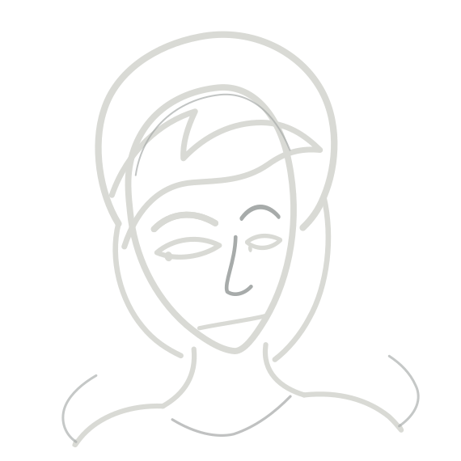
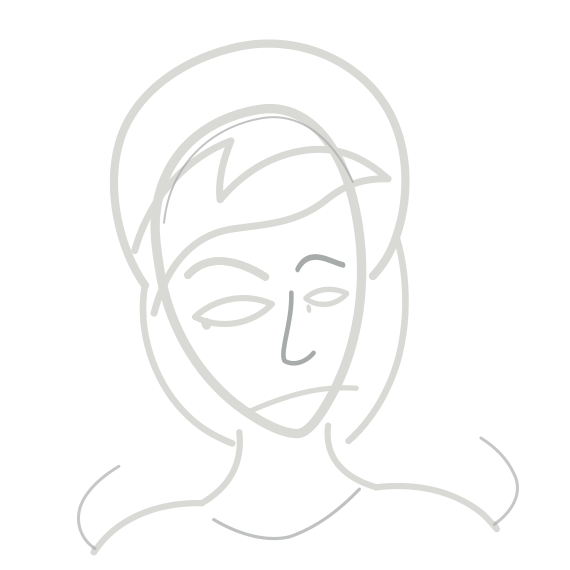

Hermes plugin · v0.1.29
It's in Your Head
A 96px strip docked at the bottom of the desktop app shows how a work session is going. It watches tools, turns and friction through derived signals. It does not store prompts, and it does not claim to know what you think.
Portrait
What the strip draws
Six measured dimensions — directness, context richness, exploration, analytical depth, iteration and scope — are projected into openness, focus and warmth. These are engine renders of five states, settled at t = 0. Click one to enlarge it.


Surface
Where the information appears
Two places: the strip and the /mirror commands in chat.
Always docked
A live tool-call matrix, the portrait sketch, four trend bars and a ticker. Labels shorten at that width by design.
Expand for inspection
The expand icon opens a wider PULSE view: a per-tool table with call volume and goal / good / friction state.
| Command | What it shows |
|---|---|
| /mirror | Dataset line: events and tokens |
| /mirror pulse | Goal / good / friction state per label |
| /mirror portrait | Six dimensions and confidence |
| /mirror portrait draw | Deterministic ASCII face and six-axis evidence strip |
| /mirror drift | Six-dimension series, last eight points |
| /mirror context | Context-visibility audit: what the model can and cannot see |
| /mirror adaptation | Adaptation state and rules: on, off, status, rules |
| /mirror engine | Perception tier: status, enable, disable |
| /mirror reset --yes | Wipes the dataset, confirmation-gated, config untouched |
Signals
What the plugin reads
Every value below comes from tool and session events. Prompt text is not part of it.
State of tool-call flow
Goal, good or friction. It is a state, not a score.
Six dimensions and confidence
Directness, context richness, exploration, analytical depth, iteration and scope, with a confidence value.
Change over a session
A series for each dimension, last eight points. Shows how the portrait moves.
What was in reach
Lists what the model could and could not see this turn.
Opt-in only
Off by default. When on, at most one bounded instruction per turn, from deterministic rules.
Two perception tiers
Tier-0: dependency-free sketch embeddings. Tier-1: local ONNX MiniLM, explicitly enabled, CPU-only, with fallback to Tier-0.
Data path
From hook to strip
-
Capture
Nine hooks fire on tool, API, stream and session events. Each only queues a small record: which tool, how long, success or failure, turn index.
-
Aggregate
A separate, env-isolated worker drains the queue off the hot path and writes derived features to local WAL SQLite in the active profile. Raw prompts are never written.
-
Perceive
The features produce the six dimensions, the pulse and the drift. Tier-0 runs by default; Tier-1 is opt-in local inference.
-
Surface
The strip and the /mirror commands read that local database.
-
Adapt
If enabled, one bounded instruction per turn is emitted. Off by default.
Privacy
Where the data stays
Everything is stored in the active profile's plugin-data directory. No prompt text, reasoning text or credentials are written. When reasoning capture is enabled, deltas are buffered in memory for the stream and discarded at its boundary. The only network call is the explicitly enabled, pinned ONNX model download. /mirror reset --yes wipes the dataset.